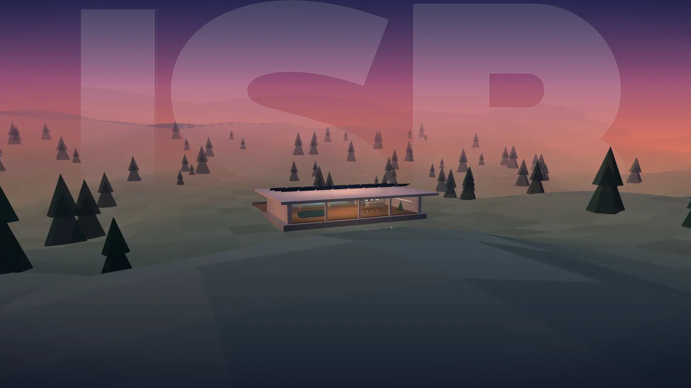

پیش از اولین خط، اقلیم، نور و محل پروژه را میخوانیم.
رفتار نور، انرژی و آسایش را با مدلسازی دقیق میسنجیم.
هوا، نور روز و دما را برای کسی که داخل آن زندگی میکند طراحی میکنیم.
از بام تا رتبهٔ سرو سبز، مسیر پایداری را مستند میکنیم.